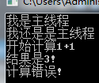
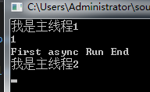
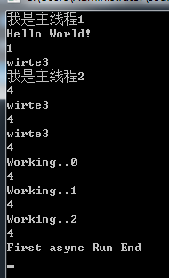

什么是异步
举个例子:小明的妈妈让小明烧一壶水,水烧开后要倒进水壶里,同时还需要把家里打扫一下.
小明的操作流程一:烧水---->等待至水烧开----->水倒进水壶里-------->打扫家务
小明的操作流程二:烧水----->打扫家务-------->等水烧开了就将水倒进水壶里-------->继续打扫家务.
第二种方式就是异步.
异步的使用
一.以委托方式调用异步
delegate void Write();
static void Main(string[] args)
{
Console.WriteLine("我是主线程");
Write write = new Write(new Program().WriteLine);
write.BeginInvoke(new Program().Judge, null);
Console.WriteLine("我还是是主线程");
Console.Read();
}
private void WriteLine() {
Console.WriteLine("开始计算1+1");
Thread.Sleep(3000);
Console.WriteLine("结果是3!");
}
private void Judge(IAsyncResult async) {
Console.WriteLine("计算错误!");
}运行结果 ;其中WriteLine()是需要异步执行的方法,Judge()是异步执行完之后调用的方法,如果没有回调,则在执行委托时 将 new Program().Judge 改成null就行了.
二. async、await
异步方法需要用async关键字标记,但async标记的方法不一定是异步方法.
static void Main(string[] args)
{
Console.WriteLine("我是主线程1");
Task task =new Program(). Write1();
Console.WriteLine("我是主线程2");
Console.Read();
}
private async Task Write1()
{
int po = Thread.CurrentThread.ManagedThreadId;
Console.WriteLine(po);
Console.WriteLine("First async Run End");
}
运行结果, ,可以看到Write1()依然是在主线程中执行的.
await的使用限制:必须在有async标记的方法中使用.后面接的方法的返回值类型必须是Task或Task<T>..
static void Main(string[] args)
{
Console.WriteLine("我是主线程1");
Task task =new Program(). Write1();
Console.WriteLine("我是主线程2");
Console.Read();
}
private async Task Write1()
{
await Write2();
int po = Thread.CurrentThread.ManagedThreadId;
Console.WriteLine(po);
Console.WriteLine("First async Run End");
}
private async Task Write2()
{
Console.WriteLine("Hello World!");
await Write3();
for (int i = 0; i < 3; i++)
{
int po = Thread.CurrentThread.ManagedThreadId;
Console.WriteLine(po);
Console.WriteLine("Working..{0}", i);
await Task.Delay(1000); //和Thread.Sleep(1000)效果一样.
}
}
private async Task Write3() {
for (int i = 0; i < 3; i++)
{
int po = Thread.CurrentThread.ManagedThreadId;
Console.WriteLine(po);
Console.WriteLine("wirte3");
await Task.Delay(1000);
}
}
运行结果
await表示的是await XX()之后的方法时异步的, XX()方法依然是在主线程中执行的,所以Write2()中的
Console.WriteLine("Hello World!")是在主线程中完成的,Write3()的第一次循环也是在主线程中完成的,然后第一次结束后有一个 await Task.Delay(1000);所以第二次循环是在异步线程中完成的.